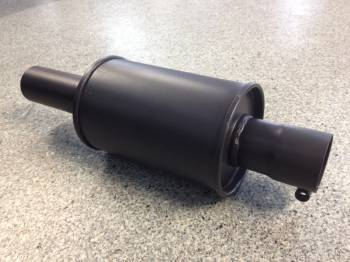
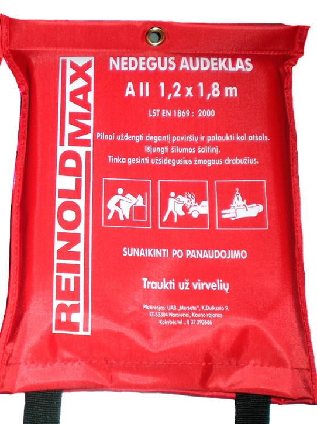
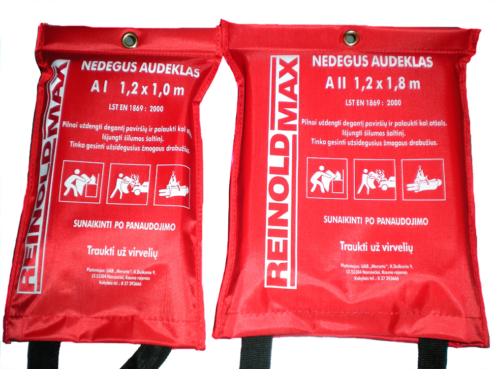
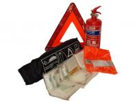
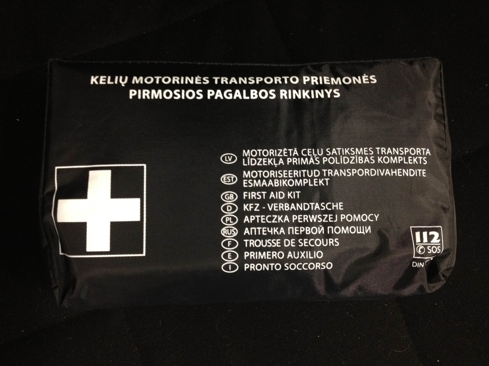
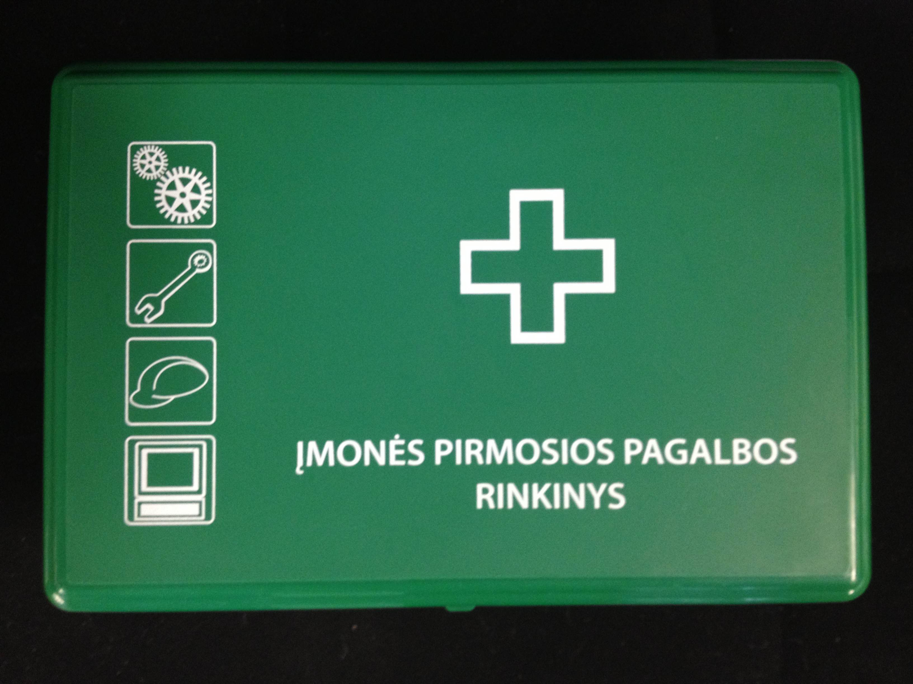

Kibirkščių gesikliai transporto priemonių ir žemės ūkio technikos duslintuvams - privalomi durpynuose dirbančiai technikai, traktoriams ir degias medžiagas gabenančioms automobilinėms cisternoms.

Kibirkščių gesiklis
Paskirtis: vidaus degimo variklių duslintuvų vamzdžiams
Kaina105,13 €
Reikalavimas pagal Bendrąsias gaisrinės saugos taisykles (Žin., 2010, Nr. 99-5167).
a) vidaus degimo variklius turinčias transporto priemones vairuojantys asmenys eksploatuojamame durpyne privalo: dirbti tik su techniškai tvarkingu transporto priemonės varikliu ir kibirkščių gesikliu; nedelsdami šalinti pastebėtus gaisro židinius, atsiradusius nuo pravažiavusios transporto priemonės; turėti kibirą, kastuvą ir gesintuvą, turintį ne mažiau kaip 6 kg gesinimo medžiagos;
b) traktoriai, kita žemės ūkio technika turi turėti tvarkingus kibirkščių gesiklius ir pirminių gaisro gesinimo priemonių;
c) automobilinės cisternos, transportuojančios ypač degias, labai degias ir degias skystas bei dujines medžiagas ir preparatus, turi būti įžemintos (vežant, pripilant ir išpilant), turėti pirminių gaisro gesinimo priemonių. Duslintuvų vamzdžiai turi būti su techniškai tvarkingais kibirkščių gesikliais;
d) automobilinėse cisternose, gabenančiose ypač degius ir labai degius skysčius, turi būti techniškai tvarkingi įrenginiai, skirti cisternoms prijungti prie estakados įžeminimo kontūro. Automobilinių cisternų duslintuvai turi būti su techniškai tvarkingais kibirkščių gesikliais, išvestais į priekį. Automobilinėse cisternose turi būti pirminių gaisro gesinimo priemonių.
Nedegūs audeklai
2 prekės
Nedegus audeklas - geriausia priemonė malšinant nedidelį gaisrą. Užklotas pagamintas iš ugniai atsparios medžiagos, patogumo sumetimais prie jo pritvirtinti diržai. Tai pati geriausia priemonė malšinti gaisrą, įsiplieskusį užsidegus riebalams, tačiau juo galima gesinti ir degančius buitinės technikos prietaisus bei užsiliepsnojusius žmogaus rūbus.

Nedegus audeklas AI
AI
Išmatavimai: 1,2 m x 1,0 m
Kaina14,01 €

Nedegus audeklas AII
AII
Išmatavimai: 1,20 m x 1,80 m
Kaina17,52 €
Svarbu prisiminti
Gesinant gaisro židinį, reikia visiškai uždengti jį užklotu. Tai neleidžia patekti orui, ir ugnis nuslopsta.
Gesinant degančius riebalus, jokiu būdu negalima naudoti vandens!
Užpylus ant degančių riebalų netgi visiškai nedaug vandens, ugnis pašoks iki pat lubų.
Saugos rinkiniai ir pirmosios pagalbos vaistinėlės
3 prekės
Automobilio saugos rinkinys, pirmosios pagalbos rinkinys automobiliui ir įmonės pirmosios pagalbos rinkinys. Automobilio rinkiniai pagaminti Lietuvoje - su jais automobilis atitiks saugos reikalavimus per techninę apžiūrą.

Kelių motorinės transporto priemonės saugos rinkinys
Sudėtis: pirmosios pagalbos rinkinys (DIN 13164 standartas)
Sudėtis: 2 kg miltelinis gesintuvas
Sudėtis: avarinis trikampio formos kelio ženklas
Sudėtis: šviesą atspindinti liemenė
Pakuotė: medžiaginis dėklas su dviem užtraukiamais skyriais
Kaina49,53 €

Kelių motorinės transporto priemonės pirmosios pagalbos rinkinys
Sudėtis: pirmosios pagalbos rinkinys (DIN 13164 standartas)
Kaina9,73 €

Įmonės pirmosios pagalbos rinkinys
Kaina19,28 €
Kelių motorinės transporto priemonės saugos rinkinysAutomobilio saugos rinkinys pagamintas Lietuvoje, o tai užtikrina produkto kokybę. Su šiuo rinkiniu Jūsų automobilis atitiks saugos reikalavimus per techninę apžiūrą. Kiekvienam vairuotojui, norinčiam užtikrinti savo bei keleivių saugumą, privalu turėti šį rinkinį. Viskas viename medžiaginiame dėkle su dviem užtraukiamais skyriais - kompaktiška laikyti automobilyje.
Kelių motorinės transporto priemonės pirmosios pagalbos rinkinysPirmosios pagalbos rinkinys (vaistinėlė) automobiliui, pagamintas Lietuvoje.
Įmonės pirmosios pagalbos rinkinysPirmosios pagalbos rinkinys įmonėms ir įstaigoms.
Darbo saugos priemonės
9 prekės
Asmeninės apsaugos priemonės darbuotojams: akių, klausos ir veido apsauga, darbo batai, rūbai, pirštinės, šalmai ir apsauga nuo kritimo. Katalogai pateikiami PDF failuose, kainų teiraukitės.
Akių apsaugaKlausos apsaugaVeido apsaugaDarbo bataiDarbo rūbaiDarbo pirštinėsŠalmai, kepurėsPirmos pagalbos rinkiniai ir kitaApsauga nuo kritimo